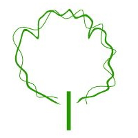

Planta
¿Dónde puedo encontrar este comando?
laPlanta
Icono:

clic izquierdo
La planta es el elemento principal de un paisaje o jardín y el tipo de objeto más importante de Lands Design.
Insertar una planta:
Cuando ejecute el comando laPlanta, aparecerá el cuadro de diálogo de inserción de plantas. Este diálogo muestra las opciones básicas del objeto Planta en dos fichas diferentes.
- Planta: especies y dimensiones en el dibujo.
- Formato: calibre y modo de presentación de la especie de planta.
- Render: parámetros que definen cómo se mostrará el objeto de planta en una vista en modo renderizado.
Pasos:
- Seleccione una especie de planta de la lista, debajo de la ficha Planta. Haga clic en el botón
Examinar... para seleccionar otra desde la Base de datos de plantas.
- Seleccione el resto de parámetros de inserción (Calibre, Modo de presentación y Cotas en el dibujo) y haga clic en Aceptar para cerrar el cuadro de diálogo.
- Seleccione los puntos de inserción en el modelo con un clic izquierdo. Se insertará una nueva especie de planta por cada clic. Puede modificar los parámetros de la planta mientras los inserta en el Panel de edición de Lands Design, en la sección Propiedades, debajo de la ficha Planta.
- Pulse Intro, Esc o haga clic con el botón derecho para finalizar el comando.

Cuadro de inserción del objeto Planta.
¿Dónde puedo encontrar este comando?
Icono:

clic izquierdo
Insertar plantas desde puntos:
Cuando ejecute el comando laPlanta, aparecerá el cuadro de diálogo de inserción de plantas. Este diálogo muestra las opciones básicas del objeto Planta, como se ha descrito anteriormente.
Pasos:
- Seleccione una especie de planta de la lista, debajo de la ficha Planta. Haga clic en el botón
Examinar... para seleccionar otra desde la Base de datos de plantas.
- Seleccione el resto de parámetros de inserción (Calibre, Modo de presentación y Cotas en el dibujo) y haga clic en Aceptar para cerrar el cuadro de diálogo.
- Seleccione la opción DesdePuntos en la línea de comandos.
- Seleccione los puntos en el modelo donde quiera colocar las plantas.
- Pulse Intro, Esc o haga clic con el botón derecho para finalizar el comando.
Puntos de control 
Las plantas tienen un único punto de control, situado en el punto central inferior del objeto.
Los puntos de control de las plantas se activan automáticamente al seleccionar las plantas una por una. Para activar uno o más puntos de control del objeto Planta, seleccione las plantas y ejecute el comando ActivarPuntos (o pulse F10). Para desactivar los puntos de control, pulse Esc o ejecute el comando DesactivarPuntos.
Opciones y parámetros de inserción
Los parámetros y las opciones de inserción de Planta se dividen en varias fichas, que están disponibles desde diferentes diálogos:
General
Atributos generales del objeto Planta: Nombre, Color, Código y Palabras clave.
Planta
- Especie: nombre de la especie de planta seleccionada. El cuadro combinado muestra una lista de las diferentes especies de plantas que ya se han insertado en el modelo actual. Puede seleccionar una especie de planta de la lista o hacer clic en el botón
Examinar... para seleccionar una nueva especie de la Base de datos de plantas.
- Cotas en el dibujo:
- Diámetro de copa
- Altura aproximada
- Edad
- Variación natural: cuando está activada, esta opción define una variación de altura aleatoria a la especie de planta insertada o seleccionada. El valor máximo (100%) crea especies de plantas que van del 50% al 150% de su tamaño.
- Rotación aleatoria: cuando está activada (opción predeterminada), esta opción establece una rotación aleatoria de las plantas. Cuando la opción está desactivada, puede indicar un ángulo de rotación específico para cada planta. El ángulo de rotación se calcula a partir del eje vertical de la planta.
Los valores mínimos y máximos de altura de la planta (edad de la planta) se definen mediante las propiedades de cada especie de planta y pueden editarse desde el
diálogo Propiedades de especies de plantas, disponible en la Base de datos de plantas.
Formato
- Calibre: dimensiones de la corteza de la especie de planta. Hay un intervalo de valores disponibles que oscila entre 10 y 130 mm, pero puede introducir cualquier otro valor.
- Modo de presentación: hay tres tipos de modos de presentación disponibles, pero se pueden crear nuevos.
- Raíz desnuda
- Cepellón
- Contenedor
Render
Esta ficha determina cómo se mostrarán los objetos de plantas en una vista renderizada. Esta ficha solo es visible cuando la representación 3D de las plantas está definida como Realista en las propiedades de documento.
- Estación: cuando se activa la casilla Ignorar estación global, el usuario puede elegir en qué estación se renderizarán las plantas de entre las 7 opciones disponibles: Inicio de primavera, Primavera, Final de primavera, Verano, Final de verano, Otoño e Invierno.
- Densidad de follaje: Flamingo nXt generará más o menos hojas según el nivel elegido.
Opciones de edición
Estas son las opciones de edición del objeto de planta, disponibles en el
área de edición del Panel de edición:
Representación gráfica de plantas:
Lands Design ofrece diferentes representaciones 2D y 3D simultáneas de las plantas en el dibujo, con el fin de manejar las plantas desde tres niveles conceptuales distintos. La visualización de representación de la Planta se puede cambiar en Propiedades de documento.
Representación 2D de las plantas
|
|
|
| Copa |
Símbolo de replanteo |
Representación 3D de las plantas
|
|
|
|

|
| Realista |
Detallada |
Conceptual |
Elevaciones |